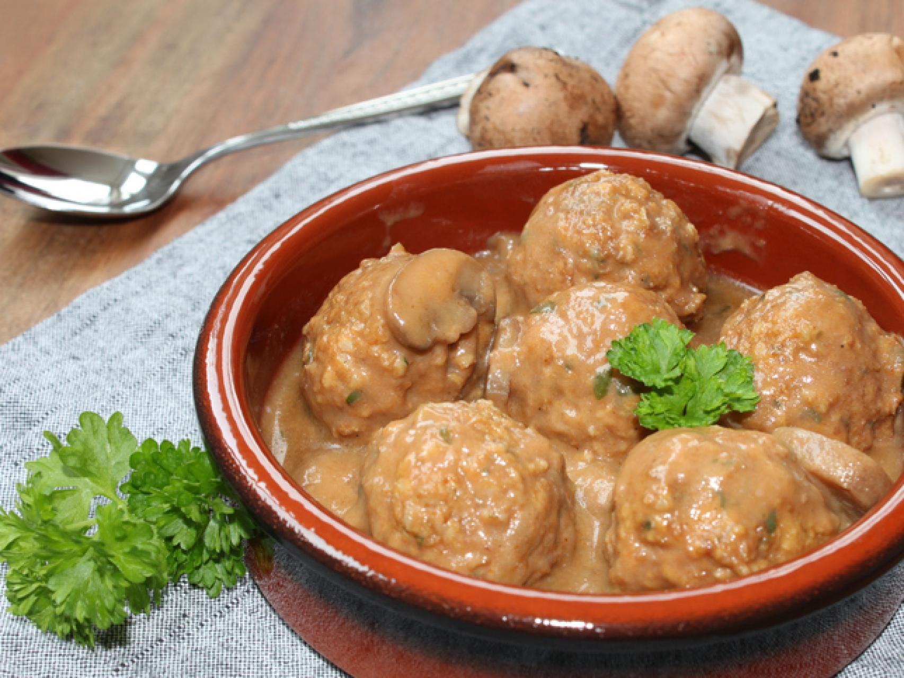

Albondigas de la abuela
Hoy te traemos una receta clásica que nunca pasa de moda: Albóndigas caseras en salsa de tomate. Este plato, lleno de sabor y tradición, es perfecto para compartir en familia o con amigos. Fácil de preparar y adaptable a diferentes gustos, las albóndigas se han ganado su lugar en las mesas de todo el mundo. ¡Sigue leyendo para aprender a hacerlas desde cero!
Ingredientes
Para las albóndigas
500 g de carne molida (puedes usar res, cerdo o una mezcla)
1 huevo
2 dientes de ajo finamente picados
1/2 taza de pan rallado
1/4 taza de leche
2 cucharadas de perejil fresco picad
Sal y pimienta al gusto
Aceite de oliva para freír
Para la salsa de tomate:
400 g de tomate triturado (puedes usar tomate fresco o en lata)
1 cebolla picada
2 dientes de ajo picados
1 cucharadita de azúcar (opcional)
1 hoja de laurel
1/2 cucharadita de orégano seco
Aceite de oliva
Sal y pimienta al gusto
Preparación
Preparación de las albóndigas:
- En un bol grande, mezcla la carne molida con el huevo, el ajo picado, el pan rallado, la leche, y el perejil. Agrega sal y pimienta al gusto.
- Forma bolitas con la mezcla, asegurándote de que todas tengan un tamaño similar para que se cocinen uniformemente.
- Fríe las albóndigas en aceite de oliva caliente hasta que estén doradas por fuera. Resérvalas.
Preparación de la salsa:
- En la misma sartén, sofríe la cebolla y el ajo hasta que estén dorados y tiernos.
- Añade el tomate triturado, el laurel, el orégano y una pizca de azúcar para equilibrar la acidez. Cocina a fuego lento durante 10-15 minutos.
Cocción final:
- Coloca las albóndigas en la salsa de tomate. Cocina a fuego lento durante 15-20 minutos para que absorban todo el sabor de la salsa.
- Ajusta de sal y pimienta si es necesario.
Presentación:
Sirve estas deliciosas albóndigas acompañadas de arroz, pasta o puré de papas. Decóralas con perejil fresco picado para darles un toque final. ¡No olvides un buen trozo de pan para disfrutar hasta la última gota de salsa!
